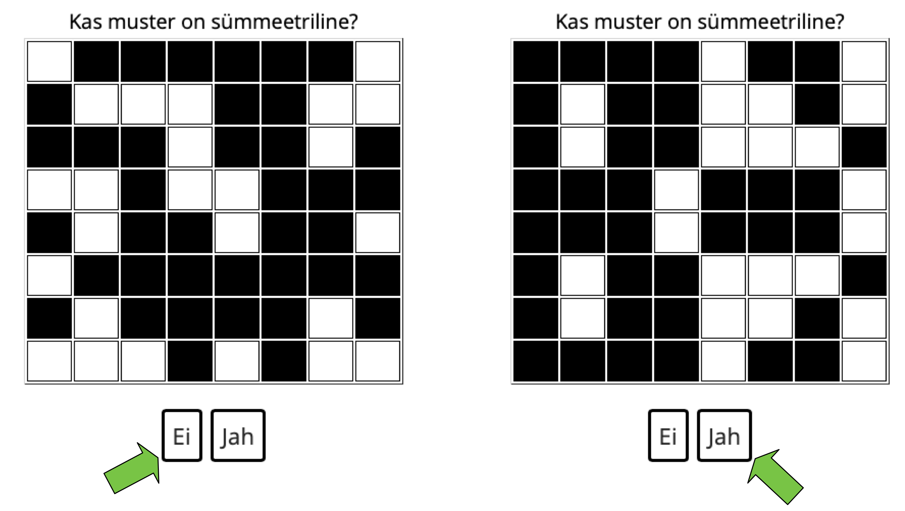

<html>
	<head>
		<title>SymmetrySpan</title>
		<script src="https://ajax.googleapis.com/ajax/libs/jquery/1.11.1/jquery.min.js"></script>
		<script src="jspsych-5.0.3-sym/jspsych.js"></script>

		<script src="jspsych-5.0.3-sym/plugins/jspsych-text.js"></script>
		
		<script src="jspsych-5.0.3-sym/plugins/jspsych-button-response-judgeSym.js"></script>
		<script src="jspsych-5.0.3-sym/plugins/jspsych-button-response-hitCells.js"></script>
		<script src="jspsych-5.0.3-sym/plugins/jspsych-instructions.js"></script>
		
		<script src="jspsych-5.0.3-sym/plugins/equations.js"></script>
		<script src="jspsych-5.0.3-sym/plugins/jspsych-survey-text_persCode.js"></script>
		<script src="jspsych-5.0.3-sym/plugins/jspsych-survey-multi-choice.js"></script>
		<script src="jspsych-5.0.3-sym/plugins/jspsych-single-stim.js"></script>
		
		<script src="jspsych-5.0.3-sym/plugins/matrices.js"></script>
		<script src="jspsych-5.0.3-sym/plugins/jspsych-rememberCells.js"></script>
		<script src="jspsych-5.0.3-sym/plugins/jspsych-rememberCells-practice.js"></script>
		<link href="jspsych-5.0.3-sym/css/jspsych_symSpan.css" rel="stylesheet" type="text/css"></link>
		
		<style>
			:root{
				--normalTextSize: 20px;
				--cellSize_symMat: 40px;
				--cellSize_remMat: 60px;
				--numberSize_remMat: 40px;
				
			}
		</style>

	</head>
	
	
	<script>
		// helper functions
		function scrollWin() {window.scrollTo(0, 0);};

		function rememberCellsFx(t_SetSize){
	
			cells_trial_x = []
			potential_cells = []
			for(j=0;j<16;j++){potential_cells.push(j)}
			
			for(t_i=0;t_i<t_SetSize;t_i++){
						t_i_sample = Math.floor(Math.random()* potential_cells.length)
						t_i_sample_name = potential_cells[t_i_sample]
						cells_trial_x.push(t_i_sample_name)
						potential_cells.splice(t_i_sample,1)
					};
					
			return(cells_trial_x)
		}

		function successCountrFx (successCountr_sym,pattern,b_pressed){
			if(pattern=="symmetrical"&b_pressed==1){successCountr_sym+=1}
			if(pattern=="asymmetrical"&b_pressed==0){successCountr_sym+=1}
			return(successCountr_sym)
		}

		function symFeedback (nErrorFreeTrials_symPractice,successCountr_sym,pattern,b_pressed){
			

			if(pattern=="symmetrical"){
					if(b_pressed==1){
						
						nTrials_remaining = nErrorFreeTrials_symPractice-successCountr_sym-1;
						if(nTrials_remaining==0){feedText = "&#213ige. Esitatud muster oli s&#252mmeetriline."+"<p>"+"Harjutamissessioon on l&#245ppenud!"+"<p>"+"J&#228tkamiseks kl&#245psa nuppu Edasi"}else{feedText = "&#213ige. Esitatud muster oli s&#252mmeetriline."+"<p>"+nTrials_remaining+" vigadeta katse(t) on j&#228&#228nud (kokku "+(nErrorFreeTrials_symPractice-1)+" katset)."}	
					}else{
						nTrials_remaining = nErrorFreeTrials_symPractice-successCountr_sym-1;
						feedText = "Vale. Esitatud muster oli s&#252mmeetriline."+"<p>"+nTrials_remaining+" vigadeta katse(t) on j&#228&#228&#228nud (kokku "+(nErrorFreeTrials_symPractice-1)+" katset)."}
				}
				if(pattern=="asymmetrical"){
					if(b_pressed==0){
						
						nTrials_remaining = nErrorFreeTrials_symPractice-successCountr_sym-1;
						if(nTrials_remaining==0){feedText = "&#213ige. N&#228idatud muster oli ebas&#252mmeetriline."+"<p>"+"Suur t&#228nu! &#220lesande (a) harjutamine on n&#252&#252d l&#245ppenud."+"<p>"+" Harjutuse (b) alustamiseks kl&#245psa nuppu <i>Edasi</i>."}else{feedText = "&#213ige. N&#228idatud muster oli ebas&#252mmeetriline."+"<p>"+nTrials_remaining+" vigadeta katse(t) on j&#228&#228nud (kokku "+(nErrorFreeTrials_symPractice-1)+" katset)."}
					}else{
						nTrials_remaining = nErrorFreeTrials_symPractice-successCountr_sym-1;
						feedText = "Vale. N&#228idatud muster oli ebas&#252mmeetriline."+"<p>"+nTrials_remaining+" vigadeta katse(t) on j&#228&#228nud (kokku "+(nErrorFreeTrials_symPractice-1)+" katset)."}
				}

				return feedText
		}

	</script>

	<script>
		function add(a, b) {
    		return a + b;
		}
	</script>
	
	<script>
	var trials = [2,2,2,3,3,3,4,4,4,5,5,5,6,6,6]
	//var trials = [2,3,6];
	function trials_gene(){return (trials = [2,2,2,3,3,3,4,4,4,5,5,5,6,6,6])};
	//function trials_gene(){return (trials = [2,2])};
	var trials_copy = trials;
	//var trials = [2,2];
	//var trials_seq = jsPsych.randomization.repeat(trials, 1);
	for(t_i=0;t_i<trials_gene().length;t_i++){
		if(t_i==0){trials_seq=[]}
		t_i_sample = Math.floor(Math.random()*trials_copy.length)
		t_i_sample_name = trials_copy[t_i_sample]
		trials_seq.push(t_i_sample_name)
		trials_copy.splice(t_i_sample,1)
	}				
	
	var maxSetSize = 6;
	var nTrials = trials_seq.length;
	var nPerSetSize = 3;
	
	var rangePracticeSetSize = {min:3,max:3};
	var practiceCriterion = 1;

	var nErrorFreeTrials_symPractice = 3;
	

	
///////// Intro
/////////
	var welcome = {
			type: 'instructions',
			pages: [
			//<p>Aus unserem allt&#xE4;glichen Leben ist uns wahrscheinlich allen bekannt, dass es schwierig sein kann mehrere Aufgaben gleichzeitig, zu absolvieren. 
					"<p class='center-content'> <h2> Tere tulemast lahendama <b style='color:#008080'>SymSpan</b> &#252lesannet!</h2><p> <b style='color:#008080'>SymSpan</b> &#252lesanne paneb proovile Sinu r&#246&#246pr&#228hklemise (multitasking) oskused, simuleerides olukorda, kus kahte &#252lesannet tuleb teha paralleelselt: <p>(a)	S&#252mmeetria&#252lesandes tuleb otsustada, kas ekraanil esitatud mustadest ja valgetest ruutudest koosnev muster on horisontaalselt s&#252mmeetriline v&#245i mitte. <br>(b)	M&#228lu&#252lesandes on oluline meeles pidada v&#228rviliste vilkuvate v&#228ljade asukohad 4x4 maatriksis. <p>Kogu &#252lesande lahendamine (sh harjutamine) v&#245tab aega umbes 15 minutit.<ul><h3><li> Veendu, et lahendad &#252lesannet kas <i>Firefox</i> v&#245i <i>Chrome</i> brauseri abil. &#196ra kasuta <i>Safari</i> ega <i>Windows Internet Explorer</i> brauserit!</li><li>Palun osale ainult siis, kui tunned end puhanuna ja keskendunult. </li><li>Palun ole ettevaatlik, et Sa kogemata ei vajutaks Escape-nuppu, mis l&#245petaks &#252lesande ilma andmeid salvestamata. </li></h3></ul><p>Oma n&#245usoleku andmiseks ja &#252lesande lahendamise kohta edasiste juhiste saamiseks kl&#245psa nuppu <i>Edasi</i>."],
			show_clickable_nav: true,
			
			};


    var informedConsent1 = {
		type: 'survey-multi-choice',
		questions: ["<b>N&#245usolek uuringus osalemiseks </b>1/3"],
		options: [["Olen &#252lesande kirjelduse l&#228bi lugenud ja n&#245ustun osalema."]],
		required: [true]
    };
	var informedConsent2 = {
		type: 'survey-multi-choice',
		questions: ["<b>N&#245usolek uuringus osalemiseks </b>2/3"],
		options: [["Olen n&#245us, et minu anon&#252&#252mseid andmeid kasutatakse teadusartiklite avaldamisel."]],
		required: [true]
    };
    var informedConsent3 = {
		type: 'survey-multi-choice',
		questions: ["<b>N&#245usolek uuringus osalemiseks </b>3/3"],
		options: function(){return([["Olen n&#245us, et teaduse l&#228bipaistvuse huvides tehakse mu anon&#252&#252msed andmed teistele teadlastele vabalt k&#228ttesaadavaks vastavalt Avatud Teaduse Raamistikule (vt <a href='https://osf.io/'> Open Science Framework</a>)."]])},
		required: [true]
    };

	var persData_code = ["<p> Loo oma anon&#252&#252mne isiklik kood:"];
	var demographics = {
	  		type: "survey-text-persCode",
	  		questions: persData_code,
			preamble: "<b>Juhised isikliku koodi loomiseks</b>: <br> Esimene s&#252mbol: Sinu ema eesnime esimene t&#228ht (nt <b>M</b>arta) <br> Teine s&#252mbol: Sinu isa eesnime esimene t&#228ht (nt <b>S</b>iim) <br> Kolmas ja neljas s&#252mbol: Sinu s&#252nniaasta kaks viimast numbrit (nt 18<b>95</b>)<br> Viies s&#252mbol: Sinu praeguse aadressi esimene t&#228ht (nt <b>P</b>argi t&#228nav) <br> Kuues s&#252mbol: Sinu majanumbri esimene number (nt <b>1</b>9) <p> N&#228ide t&#228ielikust isiklikust koodist: <b>MS95P1</b>",
			on_finish: function(data) { 
		 		code_length = data.code_length;
		 		if(code_length!=6){alert("Palun sisesta kuuekohaline isiklik kood.")}
		 		
		 	}
	};
	var persCode_loop = {
		timeline: [demographics],
		loop_function: function(data){
				if(code_length!=6){
		            return true;
		        } else {
		            return false;
		        }
		  },

	};
///////// Practice
	var practice_overview = {
		type: 'instructions',
		pages: ["<p>***</p> N&#252&#252d j&#228rgnevad kolm esimest l&#252hikest harjutust, mis selgitavad sammhaaval SymSpan &#252lesannet:<p><b>(a)</b>	S&#252mmeetria&#252lesanne<br><b>(b)</b> M&#228lu&#252lesanne<br><b>(ab)</b> M&#245lemad &#252lesanded korraga (SymSpan &#252lesanne). <p>***</p>Esimese harjutuse alustamiseks kl&#245psa nuppu <i>Edasi</i>."],
		show_clickable_nav: true,
	};
///////// Practice Symmetry
	
	var intro_symmetry_practice = {
			type: 'instructions',
			pages: function(){return ["<p class='center-content'><b>S&#252mmeetria&#252lesanne: juhised</b></p> J&#228rgnevalt n&#228idatakse Sulle mustadest ja valgetest ruutudest kokku pandud mustreid (maatrikseid). Oluline on otsustada, kas maatriksi muster on horisontaalselt s&#252mmeetriline v&#245i mitte (vt alltoodud pilti).</p></p></p> <p class='center-content'> Alustamiseks kl&#245psa nuppu <i>Edasi</i>.</p><p>"]},
			show_clickable_nav: true,
			on_finish: function(data) { 
				successCountr_sym = 0;
			},
	};

	var symmetry_buttons = [ ["Ei"] , ["Jah"] ];
	var symmetry = {
		    type: 'judgeSym',
			is_html: true, 
			prompt: function(){return unescape("Kas muster on s%FCmmeetriline?") },
		    choices: symmetry_buttons,
	 	   	on_finish: function(data){
	 	   		pattern = data.matrixPattern
				b_pressed = data.button_pressed
				successCountr_sym = successCountrFx(successCountr_sym, pattern, b_pressed)
				
	 	   	},
		};

	var feedback_symmetry_0 = {
		type: 'text',
		text: function(){return symFeedback (nErrorFreeTrials_symPractice,successCountr_sym,pattern,b_pressed) },
		on_finish: function(data) { 
						
		}
	};

	var symmetry_loop_practice = {
		timeline: [symmetry,feedback_symmetry_0],
		loop_function: function(data){
		        
				if(successCountr_sym == (nErrorFreeTrials_symPractice-1)){
		            return false;
		        } else {
		            return true;
		        }
		  },
	};

///////// Practice Remember
	var intro_remember_practice = {
			type: 'instructions',
			pages: function(){return ["<p class='center-content'><b>M&#228lu&#252lesanne: juhised</b></p> Kl&#245psates nuppu <i>Edasi</i> ilmub ekraanile 4x4 maatriks, mille sees hakkavad &#252ksikud v&#228ljad &#252ksteise j&#228rel v&#228rviliselt vilkuma. Meelde tuleb j&#228tta k&#245ik eelnevalt vilkunud v&#228ljad nende esitamise j&#228rjekorras (kl&#245psates maatriksi v&#228ljadele). </p></p><p class='center-content'> Harjutamissessiooni alustamiseks kl&#245psa nuppu <i>Edasi</i>.</p><p>"]},
			show_clickable_nav: true,
			on_finish: function(data) { 
				t_SetSize = getRndInteger(rangePracticeSetSize.min,rangePracticeSetSize.max)
				remememberCells_trial_x = rememberCellsFx(t_SetSize);
				
				successCountr = 0;
				
				nCells_RecCorPos_total = 0;
				nCells_RecIncorPos_total = 0;
				nCells_Missed_total = 0;
				nCells_FalseMem_total = 0;
				nCells_total = 0;
			},
	};
	var plusSign = {
  	  	type: "single-stim",
		stimulus: "<p><p><b>+",
  	  	choices: [100], timing_response: 1200, data: {phase: 'remember'},
  	  	is_html: true
	};

	var remember = {
  	  	//type: "single-stim",
  	  	type: "rememberCells-practice",
  	  	flashingCells: function(){return(remememberCells_trial_x)},
		//stimulus: function(){var mat = matRememberFx(remememberCells_trial_x[rem_i]); return(mat)},
  	  	choices: [100], timing_response: function(){return(1000*(t_SetSize))}, data: {phase: 'remember'},
  	  	is_html: true,
 	   	on_finish: function(data){
 		   	 	   	},
		
	};

	var recall = {
  		type: 'button-response-hitCells',
  		is_html: true,
		stimulus: "Kl&#245psa v&#228ljadel esitatud j&#228rjekorras!",
		showEndButton: true,
		flashedCells: function(){return remememberCells_trial_x},
		response_ends_trial: false,
		on_finish: function(data) { 
			cells_presented = data.flashed_cells
			cells_clicked = data.clicked_cells
			
			cells_RecCorPos = data.Cells_RecCorPos
        	cells_RecIncorPos = data.Cells_RecIncorPos
        	cells_Missed = data.Cells_missed
        	cells_FalseMem = data.Cells_FalseMem

        	nCells_RecCorPos_total = nCells_RecCorPos_total+cells_RecCorPos.length
        	nCells_RecIncorPos_total = nCells_RecIncorPos_total+cells_RecIncorPos.length
        	nCells_Missed_total = nCells_Missed_total+cells_Missed.length
        	nCells_FalseMem_total = nCells_FalseMem_total+cells_FalseMem.length

        	nCells_total = nCells_total+cells_presented.length


        	accuracy_rem_current = cells_RecCorPos.length/(cells_RecCorPos.length+cells_RecIncorPos.length+cells_Missed.length+cells_FalseMem.length);
        	accuracy_rem_current = Math.floor(accuracy_rem_current*100)
        	
        	accuracy_rem_cumu = nCells_RecCorPos_total/(nCells_RecCorPos_total+nCells_RecIncorPos_total+nCells_Missed_total+nCells_FalseMem_total)
        	accuracy_rem_cumu = Math.floor(accuracy_rem_cumu*100)
        	
        	
		},	
	};


	var feedback_recall_0 = {
		type: 'instructions',
		pages: [ function(){return matFeedbackFx(cells_presented, cells_clicked, cells_RecCorPos, cells_RecIncorPos, cells_Missed, cells_FalseMem, accuracy_rem_current) } ],
		show_clickable_nav: true,
		on_finish: function(data) { 
			if(accuracy_rem_current==100){
				feedback_recall_message = "V&#228ga hea! Harjutamissessioon on l&#245ppenud.";
				successCountr+=1;
			}else{
				feedback_recall_message = "Harjutamissessiooni l&#245petamiseks tuleb m&#245lemad &#252lesanded lahendada vigadeta.";
				remememberCells_trial_x = rememberCellsFx(t_SetSize);
			}
		}
	};

	var feedback_recall_1 = {
		type: 'instructions',
		pages: [ function(){return ""+feedback_recall_message+"" } ],
		show_clickable_nav: true,
		on_finish: function(data) { 
			
		},
	};

	var recall_loop_practice = {
		timeline: [remember,recall,feedback_recall_0,feedback_recall_1],
		loop_function: function(data){
		        
				if(successCountr == 0){
		            return true;
		        } else {
		            return false;
		        }
		  },
	};
   
///////// Practice Symmetry & Remember
	var intro_RemAndSym_practice = {
			type: 'instructions',
			pages: function(){return ["<p class='center-content'><b>M&#245lemad &#252lesanded korraga (SymSpan &#252lesanne): juhised</b></p> N&#252&#252d testitakse Sinu r&#246&#246pr&#228hklemise (multitasking) oskusi! <p>&#220lesanne koosneb n&#252&#252d s&#252mmeetria&#252lesande ja m&#228lu&#252lesande vaheldumisi lahendamisest ehk Sul tuleb:<br>(a)	otsustada, kas n&#228idatav muster on horisontaalsuunas s&#252mmeetriline v&#245i mitte ja <br>(b) meelde j&#228tta v&#228rviliste vilkuvate v&#228ljade j&#228rjekord. <p class='center-content'> Harjutamise alustamiseks kl&#245psa nuppu <i>Edasi</i>.</p><p>"]},
			show_clickable_nav: true,
			on_finish: function(data) { 
				t_SetSize = getRndInteger(rangePracticeSetSize.min,rangePracticeSetSize.max)

				successCountr_sym = 0
				successCountr_rem = 0
				
				nSymDecisions_total = 0
				symDecisions = []
				symPatterns = []

				remememberCells_trial_x = rememberCellsFx(t_SetSize);
				rem_i = 0
				nCells_RecCorPos_total = 0;
				nCells_RecIncorPos_total = 0;
				nCells_Missed_total = 0;
				nCells_FalseMem_total = 0;
				nCells_total = 0;
				
			},
	};

	var rem_RemAndSym = {
  	  	type: "single-stim",
  	  	stimulus: function(){
  	  		var mat = matRememberFx(remememberCells_trial_x[rem_i]);return(mat)},
  	  	choices: [100], 
  	  	timing_response: function(){return(500*(t_SetSize))}, data: {phase: 'remember'},
  	  	is_html: true,
 	   	on_finish: function(data){
 	   		
 	   		rem_i+=1
 		},
		
	};
	var sym_RemAndSym = {
		    type: 'judgeSym',
			is_html: true, 
			prompt: function(){return unescape("Kas muster on s%FCmmeetriline?") },
		    choices: symmetry_buttons,
	 	   	on_finish: function(data){
	 	   		pattern = data.matrixPattern
				b_pressed = data.button_pressed
				response = ["ebas&#252mmeetriline","s&#252mmeetriline"][b_pressed]
				/*if(pattern==response){
					//sym_decision_curr = true
					successCountr_sym += 1
					
				}else{
					//sym_decision_curr = false
					
				}*/
				if(correct_judgment==1){successCountr_sym += 1}
				
				symDecisions.push(response)
				symPatterns.push(pattern)
				nSymDecisions_total += 1
				accuracy_sym_cumu = successCountr_sym/nSymDecisions_total
				accuracy_sym_cumu = Math.floor(accuracy_sym_cumu*100)
				
	 	   	},
		};

	var RemAndSym_loop = {
		timeline: [sym_RemAndSym,rem_RemAndSym],
		loop_function: function(data){
		        
				if(rem_i==remememberCells_trial_x.length){
		            return false;
		        } else {
		            return true;
		        }
		  },
	};

	var feedback_RemAndSym_0 = {
		type: 'instructions',
		pages: [ function(){return matFeedbackFx(cells_presented, cells_clicked, cells_RecCorPos, cells_RecIncorPos, cells_Missed, cells_FalseMem, accuracy_rem_current) } ],
		show_clickable_nav: true,
		on_finish: function(data) { 
			if(accuracy_rem_current==100&accuracy_sym_cumu==100){
				feedback_recall_message = "V&#228ga h&#228sti! Harjutamissessioon on n&#252&#252d l&#245ppenud."
				stop_practice = true
			}else{
				feedback_recall_message = "Harjutamissessiooni l&#245petamiseks tuleb m&#245lemad &#252lesanded lahendada vigadeta.";
				stop_practice = false
			}
		}
	};

	var feedback_RemAndSym_1 = {
		type: 'instructions',
		pages: [ function(){return ""+"<b>"+"Tagasiside s&#252mmeetria&#252lesandele"+"</b>"+"<p>"+"Esitatud mustrid olid: "+symPatterns+"<br>"+"Sinu vastused olid: "+symDecisions+"<p>"+"<b>"+"T&#228psus: "+accuracy_sym_cumu+"%" } ],
		show_clickable_nav: true,
		on_finish: function(data) { 
				
			}
		
	};

	var feedback_RemAndSym_2 = {
		type: 'instructions',
		pages: [ function(){return feedback_recall_message } ],
		show_clickable_nav: true,
		on_finish: function(data) { 
				t_SetSize = getRndInteger(rangePracticeSetSize.min,rangePracticeSetSize.max)
				remememberCells_trial_x = rememberCellsFx(t_SetSize);
				rem_i = 0
				successCountr_rem = 0
				successCountr_sym = 0
				symDecisions = []
				symPatterns = []
				nSymDecisions_total = 0
				accuracy_sym_cumu = 0
			}
		
	};

	var RemAndSym_loop2 = {
		timeline: [RemAndSym_loop,recall,feedback_RemAndSym_0,feedback_RemAndSym_1,feedback_RemAndSym_2],
		loop_function: function(data){
		        
				if(stop_practice==true){
		            return false;
		        } else {
		            return true;
		        }
		  },
	}

	
	var goodbye = {
			type: 'instructions',
			pages: [function(){return("<h3>Suur t&#228nu vastamise eest!</h3> Kl&#245psa <i>Edasi</i>, et alustada andmete allalaadimist allalaetud failide kausta. Palun saada see fail e-posti aadressile: <a href='mailto:seasenselab@gmail.com'>seasenselab@gmail.com</a>  <p>Kui mingil p&#245hjusel allalaadimine ei t&#246&#246ta, siis palun kopeeri ja kleebi kuvatud andmed oma valitud tekstifaili ja saada see samuti aadressile <a href='mailto:seasenselab@gmail.com'>seasenselab@gmail.com</a>.</li><li>Igal juhul palun teavita meid oma osalemisest. </li></ul>")}],
			show_clickable_nav: true,	
	};

///////// Official Task
var intro_realTrials = {
			type: 'instructions',
			pages: function(){return ["<p>***</p><b> SymSpan &#252lesanne:</b> juhised <p> N&#252&#252d j&#228rgneb "+trials.length+" sarnast &#252lesannet, kus nagu ka varem, tuleb m&#245lemad &#252lesanded teha samaaegselt. <p>Pane t&#228hele, et &#252ksikud &#252lesanded v&#245ivad olla &#252sna keerulised, kuna m&#245nikord tuleb 4x4 maatriksis meelde j&#228tta kuni "+maxSetSize+" v&#228lja. <p>Oma tulemuse (punktides) saad teada alles p&#228rast viimase &#252lesande lahendamist.</p><p><b>Proovi t&#246&#246tada v&#245imalikult t&#228pselt.</b><p>***</p><p>Alustamiseks kl&#245psa nuppu <i>Edasi</i>."]},
			show_clickable_nav: true,
			on_finish: function(data) {
				x = 0
				t_SetSize = trials_seq[x]
				//t_SetSize=1
				remememberCells_trial_x = rememberCellsFx(t_SetSize);
				rem_i = 0
				nCells_RecCorPos_total = 0
				nCells_RecIncorPos_total = 0
				nCells_Missed_total = 0
				nCells_FalseMem_total = 0
				nCells_total = 0

				successCountr_sym = 0
				sym_trials_total = 0
				nSymDecisions_total = 0
				symDecisions = []
				symPatterns = []
			},
	};
	var feedback_progress = {
		type: 'instructions',
		pages: function(){if((x+1)<trials.length){return ["<p>***</p><p>Praeguseks on Sul lahendatud <b>"+(x+1)+"</b> &#252lesannet (kokku <b>"+trials.length+"</b> &#252lesannet). </p>J&#228tkamiseks kl&#245psa <i>Edasi</i>."]}else{return["<p>***</p><b> </b><br><b></b>Suur t&#228nu! SymSpan &#252lesanne on n&#252&#252d l&#245ppenud.<p>***</p><b>Tulemus</b><p></p><b>S&#252mmeetria&#252lesanne:</b><p>Esitatud mustrite arv: <b>"+nSymDecisions_total+"</b><br>&#213iged vastused: <b>"+successCountr_sym+"</b><br>T&#228psus: <b>"+accuracy_sym_cumu+"%</b><p>***</p> <p> <b>M&#228lu&#252lesanne:</b><p>&#213iges j&#228rjekorras kl&#245psatud v&#228ljad: <b>"+nCells_RecCorPos_total+"</b><br>Vales j&#228rjekorras kl&#245psatud v&#228ljad: <b>"+nCells_RecIncorPos_total+"</b><br>Puuduvad (kuid esitatud) v&#228ljad: <b>"+nCells_Missed_total+"</b><br>Ekslikult kl&#245psatud (kuid mitte esitatud) v&#228ljad: <b>"+nCells_FalseMem_total+"</b><br>T&#228psus: <b>"+accuracy_rem_cumu+"%</b><p>***</p>J&#228tkamiseks kl&#245psa <i>Edasi</i>."]}},
		show_clickable_nav: true,
		data: function(){return{successCountr_sym: successCountr_sym, cells_RecCorPos:cells_RecCorPos.length, cells_RecIncorPos: cells_RecIncorPos.length, cells_Missed: cells_Missed.length, cells_FalseMem: cells_FalseMem.length, recall_accuracy: accuracy_rem_current, summary: "summary_symAndRem" }},
		on_finish: function(data) {
			// for final feedback
			x += 1 
			rem_i = 0
			
			//t_SetSize=1
			//remememberCells_trial_x = rememberCellsFx(t_SetSize);
			
			//sym_decisions_total = sym_decisions_total+symDecisions.length
			
			symDecisions = []
			symPatterns = []
			
			t_SetSize = trials_seq[x]
			remememberCells_trial_x = rememberCellsFx(t_SetSize);
			
		},
	}
	var Symspan_loop = {
		timeline: [RemAndSym_loop,recall,feedback_progress],
		loop_function: function(data){
				if(x<trials.length){
		            return true;
		        } else {
		            return false;
		        }
		  },
	};
	var goodbye = {
        type: 'instructions',
        pages: ["<h3>Suur t&aumlnu vastamise eest!</h3> <p>Sinu anon&uuml&uumlmsed vastused on salvestatud &uumlhes Tallinna &Uumllikooli serveris. <br>Kui Sul on lisak&uumlsimusi uuringu eesm&aumlrgi v&otildei meie andmehalduse kohta, <br>saada palun meile e-kiri aadressil: <a href='mailto:seasenselab@gmail.com'> seasenselab@gmail.com</a>"],
        show_clickable_nav: false
    };

/////////
	jsPsych.init({
		
		timeline: [/*welcome, informedConsent1, informedConsent2, informedConsent3,
					persCode_loop,
					practice_overview,*/
					intro_symmetry_practice,symmetry_loop_practice,
					intro_remember_practice,recall_loop_practice,
					intro_RemAndSym_practice,RemAndSym_loop2,
					intro_realTrials,Symspan_loop,
					goodbye
					],

	   	fullscreen: false,
	   	/*on_finish: function(data){
	   	jsPsych.data.displayData();
	        jsPsych.data.displayData();
	        jsPsych.data.localSave('SymSpan_sendMeTo_seasenselab@gmail.com.txt', 'csv');
	        $.post( "http://web.htk.tlu.ee/dinogame" + "/ajax.php?method=save_data", JSON.stringify({"JSON" : jsPsych.data.dataAsJSON(), "CSV" : jsPsych.data.dataAsCSV()}) );
	   }*/
	});
	
	
		
	</script>
		
</html>